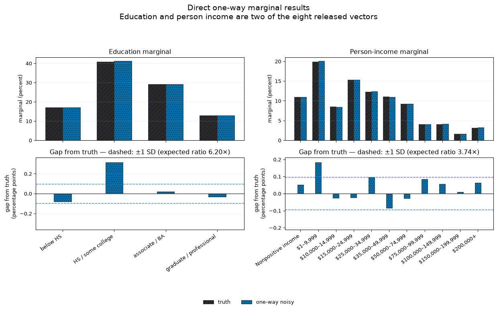
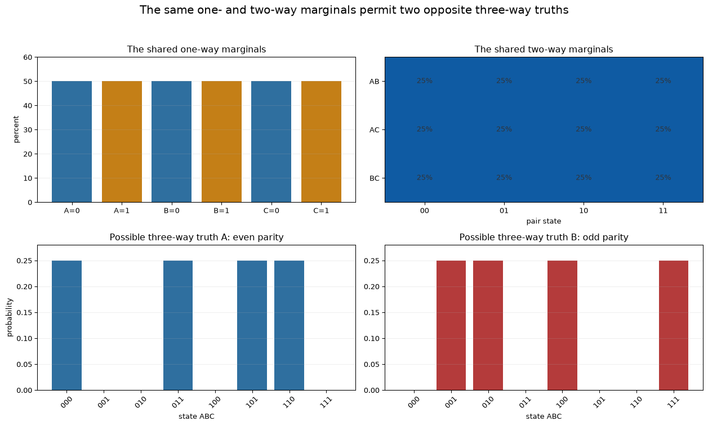
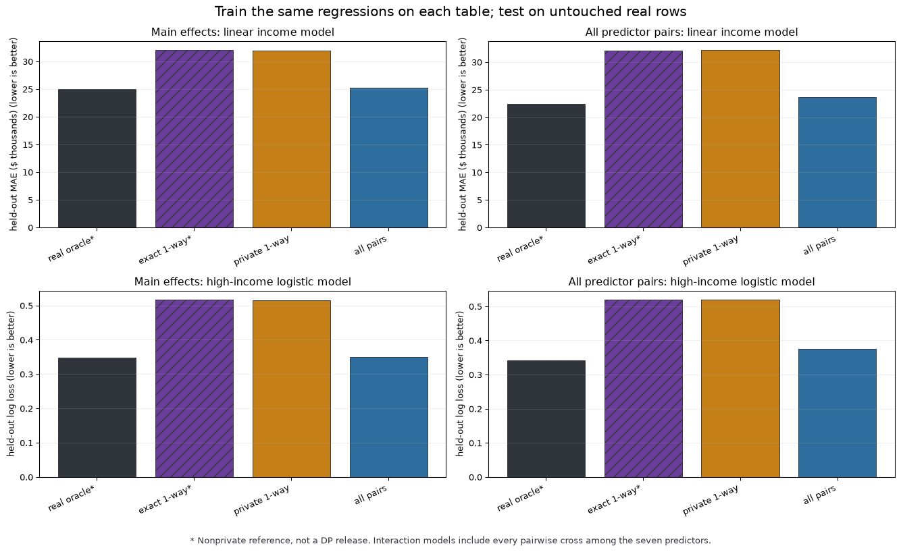

Synthetic data from private measurements
Fit, measure, reconstruct—and say what the rows preserve
Week 1 left a pressure
A lookalike table was attackable.
“Synthetic” describes how rows were made. It is not a privacy definition.
Today’s question
If synthetic rows are postprocessing, what private object did we measure first?
And which later analyses does that object support?
Original rows — decoded values
| source row |
|
|
|
|
|
|
|
|
| 24 |
Female |
34 |
high school graduate |
No |
Yes |
Yes |
north Fulton (Alpharetta) |
$25,000 |
| 3216 |
Male |
24 |
high school graduate |
No |
Yes |
No |
Roswell–Sandy Springs |
$7,800 |
| 8951 |
Male |
48 |
bachelor's degree |
Yes |
No |
No |
north Atlanta |
$315,000 |
| 12681 |
Male |
22 |
college, no degree |
No |
No |
No |
central Atlanta |
$0 |
| 22784 |
Female |
49 |
high school graduate |
Yes |
No |
Yes |
southern Fulton |
$40,500 |
Five fixed original rows; only the eight fields used below are shown. Categorical values are translated to their public labels; age and person income retain their exact original values.
The same original rows — quantized values
| source row |
|
|
|
|
|
|
|
|
| 24 |
Female |
30–39 |
high school / some college |
No |
Yes |
Yes |
north Fulton (Alpharetta) |
$25,000–34,999 |
| 3216 |
Male |
18–29 |
high school / some college |
No |
Yes |
No |
Roswell–Sandy Springs |
$1–9,999 |
| 8951 |
Male |
40–49 |
associate / bachelor's |
Yes |
No |
No |
north Atlanta |
$200,000+ |
| 12681 |
Male |
18–29 |
high school / some college |
No |
No |
No |
central Atlanta |
Nonpositive income |
| 22784 |
Female |
40–49 |
high school / some college |
Yes |
No |
Yes |
southern Fulton |
$35,000–49,999 |
Same people, quantized into the categorical domains declared before any private computation.
Our “true data” in this lecture
Fulton is public, so we can inspect these example rows.
From now on, pretend the fixed discretized construction partition—20,613 rows—is the confidential ground-truth table \(D_{\mathrm{true}}\).
Every synthetic release may depend on \(D_{\mathrm{true}}\) only through the explicitly accounted private measurements.
Public contract
- Eight fixed Fulton domains; \(D=29{,}568\).
income_bin has eleven ordered person-income brackets: nonpositive income, positive ACS-aligned boundaries through \(\$199{,}999\), and a \(\$200{,}000+\) tail.puma has seven named 2000 Fulton areas: north Fulton, Roswell–Sandy Springs, north/central/south/southeast Atlanta, and southern Fulton.- Private construction partition: 20,613 rows.
- Adjacency: substitute one row.
- Total budget per alternative: \((\varepsilon,\delta)=(1,10^{-5})\).
- Accounting: compose in \(\rho\)-zCDP, where \(\varepsilon=\rho+2\sqrt{\rho\log(1/\delta)}\).
- Through-statistic: education \(\rightarrow\) the full ordered income distribution.
- External anchors: ACS S1901 income brackets and 2000 Georgia PUMA compositions.
The last variable is total person income (PINCP), not salary: it may be zero or negative. Loss and zero share one public Nonpositive income category.
The seven Fulton areas
| 01101 |
north Fulton (Alpharetta) |
| 01102 |
Roswell–Sandy Springs |
| 01103 |
north Atlanta |
| 01104 |
central Atlanta |
| 01105 |
south Atlanta / airport |
| 01106 |
southeast Atlanta |
| 01107 |
southern Fulton |
These are readable summaries of multi-place/tract PUMAs—not municipal names. The mechanisms still use internal categories 0–6.
A real-world example: IOM / CTDC
- Official release: downloadable synthetic CSV, codebook, and data dictionary.
- Source scope: more than 17,000 reported victims and survivors in 123 countries and territories, with accounts of more than 37,000 perpetrators, 2005–2022.
- Privacy statement: the CTDC and Microsoft sources call the release differentially private.
- No numerical \((\varepsilon,\delta)\) appears in the linked sources, so none is asserted here.
Official CTDC release page · codebook · Microsoft Research release note
The released product, shown by CTDC

This is CTDC’s released synthetic-data dashboard—not a course reconstruction and not a confidential source row.
Credit: Source: Counter-Trafficking Data Collaborative (CTDC), July 2026.
Before manufacturing rows
If analysts need a fixed table or workload:
release those DP answers directly.
General-purpose rows add modeling assumptions.
Start with a Gaussian
Assume a known variance and one unknown parameter:
\[
X_i\overset{\mathrm{iid}}{\sim}\mathcal N(\mu,\sigma^2),
\qquad \sigma^2\ \text{public},\quad \mu\ \text{unknown}.
\]
Fix \(n=2{,}000\), \(\mu=0\), \(\sigma=1\), public bounds \([L,U]=[-6,6]\), and \((\varepsilon,\delta)=(1,10^{-6})\).
Under substitution adjacency, \[
\Delta_2\overline X=\frac{U-L}{n}.
\]
Fit one private Gaussian mean
The Gaussian mechanism releases
\[
\widetilde\mu
=\Pi_{[L,U]}(\overline X+Z),
\qquad
Z\sim\mathcal N\!\left(0,\frac{(U-L)^2}{2\rho n^2}\right).
\]
For this model, clipping any of the 2,000 rows has probability below \(4\times10^{-6}\). When clipping is rare, \[
\widetilde\mu\approx
\mathcal N\!\left(\mu,\frac{\sigma^2}{n}+s_{\mathrm{DP}}^2\right).
\] The DP estimate behaves like an ordinary mean with a smaller effective sample.
Then release Gaussian rows
Sample \(Y_j^*\sim\mathcal N(\widetilde\mu,\sigma^2)\) and release \(Y_j=\Pi_{[L,U]}(Y_j^*)\).
For \(m=n\) and rare clipping, \[
\overline Y\approx
\mathcal N\!\left(
\mu,\frac{\sigma^2}{n}+s_{\mathrm{DP}}^2+\frac{\sigma^2}{n}
\right).
\]
Finite row sampling is randomized postprocessing. It cannot weaken privacy and actually contracts the mechanism slightly; we still report the original Gaussian-mechanism guarantee unless that improvement is certified.
The same three estimators, twice

Density on the left; empirical CDF on the right. Privacy widens the mean once; sampling released rows widens it again.
Second step: the Binomial model
Let \(S\sim\operatorname{Binomial}(n,p)\) and \(\widehat p=S/n\), with \(n=2{,}000\) and \(p=0.35\). Now \(\Delta_2\widehat p=1/n\).
\[
\widetilde p
=\Pi_{[0,1]}(\widehat p+Z),
\qquad
Z\sim\mathcal N\!\left(0,\frac{1}{2\rho n^2}\right).
\]
Then sample \[
T\mid\widetilde p\sim\operatorname{Binomial}(n,\widetilde p),
\qquad \overline Y=T/n.
\]
The same visual grammar

The released-row curve nearly overlays an ordinary Binomial experiment with a smaller \(n_{\mathrm{eff}}\)—in both the mass/density and CDF views.
Privacy from resampling alone
- Gaussian rows: clip to \([-6,6]\), then sample \(m\) rows from \(\mathcal N(\overline X,1)\).
- Bernoulli rows: truncate \(\widehat p\) to \([0.1,0.9]\), then sample the complete \(m\)-row Binomial output.
- Both whole-output guarantees grow at leading order as \(\sqrt m/n\).
The bounds are model-dependent. Without Bernoulli truncation, a neighboring input can give an output positive probability versus zero probability.
How many rows can resampling release?

The vertical line \(m/n=1\) means “release as many rows as the original sample.” Both curves use \(n=2{,}000\) and \(\delta=10^{-6}\).
Inference warning
Synthetic rows are useful output, but they are not fresh observations from the original population.
Their sampling variation comes after model fitting and privacy noise. Standard errors that treat them as independent new evidence answer the wrong question.
Extend beyond parametric families
The Gaussian and Binomial examples each estimated one unknown parameter.
For Fulton, a complete row can occupy \[
D=2\times6\times4\times2\times2\times2\times7\times11
=29{,}568
\] joint cells: 29,567 free probabilities.
Instead of measuring all cells, privately estimate useful smaller tables, fit one valid joint distribution, and sample complete rows from that fit.
Temptation: make every column look right
For column \(j\) and category \(a\), measure its normalized histogram:
\[
q_j(D)_a=\frac{1}{n}\sum_{i=1}^n \mathbf 1\{x_{ij}=a\}.
\]
Under substitution adjacency, the complete vector has \(\Delta_2 q_j=\sqrt 2/n\).
Across the eight columns there are \[
2+6+4+2+2+2+7+11=36
\] released cells—but only eight composed vector mechanisms.
What the one-way release gets right

Education uses four released cells; person income uses eleven. The lower row gives their signed percentage-point errors its own readable scale.
What one-way marginals do not determine

The left panel is Fulton truth. The right panel is a public mathematical independence illustration—not a private release and not a fit to Fulton.
Follow six interpretable joint cells

Truth → exact one-way product → private one-way product → sampled release separates misspecification, measurement noise, and finite sampling.
Measure complete two-way tables
For columns \(j,k\), release the complete normalized contingency-table vector
\[
q_{jk}(D)_{a,b}
=\frac1n\sum_i\mathbf1\{x_{ij}=a,x_{ik}=b\}.
\]
The whole vector again has \(\Delta_2 q_{jk}=\sqrt2/n\), regardless of its number of cells. With budget \(\rho_{jk}\): \[
\begin{aligned}
\widetilde q_{jk}&=q_{jk}(D)+Z_{jk},\\
Z_{jk}&\sim\operatorname{Normal}\!\left(
0,\frac{1}{n^2\rho_{jk}}I
\right).
\end{aligned}
\]
All 28 two-way tables
There are \(\binom82=28\) column pairs. Give each complete normalized pair histogram \(\rho/28\), add Gaussian noise at its own declared vector sensitivity \(\sqrt2/n\), retain every \((A_r,y_r,\sigma_r)\), and fit one joint.
The 28 vectors contain 529 coordinates. Privacy composes over 28 vector mechanisms—not over 529 scalar cells.
This preserves much more dependence than the one-way product—but spends budget on every pair whether or not the analyst needs it.
One of the 28 measured tables

Truth → raw private measurement → truncated and renormalized table.
All 28 tables were measured at \(\rho/28\) before this education × income slice was selected for display.
The downside: induced one-ways get noisier
- Pair-cell noise is \(\sqrt{28/8}\approx1.87\) times the direct one-way scale.
- Summing 11 income cells makes the education marginal about \(6.20\) times noisier.
- Summing 4 education cells makes the income marginal about \(3.74\) times noisier.

Overlapping pairs disagree

Seven independently noised pair tables imply seven different education one-ways—and seven different income one-ways.
The joint fit restores consistency by compromise; it cannot recover all noise-free answers.
Low-order measurements can hide structure
Let \(A,B,C\in\{0,1\}\) and define
\[
p_{\mathrm{even}}(a,b,c)=\tfrac14\mathbf 1\{a\oplus b\oplus c=0\},
\quad
p_{\mathrm{odd}}(a,b,c)=\tfrac14\mathbf 1\{a\oplus b\oplus c=1\}.
\]
Every one- and two-way marginal is identical; the pairwise maximum-entropy fit is uniform over all eight cells.
The parity construction

Opposite parity tables share every one- and two-way marginal.
Temptation: add every three-way marginal
- \(\binom83=56\) three-way vectors.
- 4,154 three-way cells.
- Only \(\rho/56\) per vector under the same total budget.
- Four-way relationships would still remain unidentified.
Repeating “measure every order” eventually becomes the 29,568-cell full joint.
Regression is an evaluator—not a release
Every row uses the same seven public predictors: sex, age range, education group, employment, marital status, minor-children-at-home status, and PUMA area.
Train each fixed regression on the original construction table or on one method’s released table. Test every fitted model on the same untouched real evaluation partition.
The original-data fit is a nonprivate oracle benchmark, not another mechanism.
Main effects and interactions
Linear target: replace the eleven person-income bands by \[
(0,5,12.5,20,30,42.5,62.5,87.5,125,175,225)
\] thousand dollars.
Binary target: \(H=\mathbf 1\{\text{person income}\geq \$50{,}000\}\).
For each target, compare 25 one-hot main effects with 279 columns containing all 254 crosses between distinct predictor pairs.
A crossed predictor must be related to income through a three-way distribution. Even exact two-way marginals do not determine this regression.
Regression accuracy by release

Only sources already introduced appear here. MWEM enters the comparison only after its query family and mechanism have been defined.
MWEM’s query family
For row category \(x_{ij}\), MWEM’s public menu is
\[
\mathcal Q=\{q_{j,a},q_{jk,ab}:j<k\},
\quad q_{j,a}(D)=\frac1n\sum_i\mathbf1\{x_{ij}=a\},
\quad q_{jk,ab}(D)=\frac1n\sum_i\mathbf1\{x_{ij}=a,x_{ik}=b\}.
\]
This is exactly 36 one-column cell queries plus 529 two-column cell queries: 565 scalar fractions. It contains no three-way cells and no regression-specific interactions.
Accuracy on the declared query family

Each panel reports either the average or the largest absolute cell-fraction error, in percentage points, over the 36 one-column or 529 two-column cells.
What MWEM selected
| 0 |
1 |
children[0] |
0.5000 |
0.8429 |
0.3432 |
0.500 |
| 1 |
2 |
educ_bin[1] |
0.2500 |
0.4067 |
0.1581 |
0.943 |
| 2 |
3 |
educ_bin × employed[2,1] |
0.0989 |
0.2291 |
0.1262 |
0.233 |
| 3 |
4 |
age_bin × married[0,0] |
0.0833 |
0.1960 |
0.1163 |
0.664 |
| 4 |
5 |
employed × income_bin[0,1] |
0.0384 |
0.1329 |
0.1076 |
0.084 |
| 5 |
6 |
employed[0] |
0.4620 |
0.3746 |
0.0928 |
0.123 |
| 6 |
7 |
age_bin × employed[5,1] |
0.0908 |
0.0069 |
0.0820 |
0.134 |
| 7 |
8 |
puma[1] |
0.1429 |
0.2271 |
0.0867 |
0.158 |
The final evaluation family
- education-conditioned income-distribution error;
- mean absolute predicted-bin error from one fixed eleven-class train-synthetic/test-real model; and
- the four frozen regression errors: linear and logistic, each with main effects and with all predictor-pair interactions.
Every fitted evaluator is tested on the same untouched real evaluation rows.
Final comparison, now including MWEM

The rows are the real-data oracle, the exact one-way product, the private one-way release, all pairs, and MWEM. The same frozen regression tasks shown before MWEM are included here.
Evaluation is not silently free
Fulton is a public benchmark.
Publishing metrics or tuning on another private holdout needs another privacy ledger.
Closing: the workload remains part of the release
Private measurements support useful synthetic tables only through the statistics, model family, and workload chosen before private access.
One-ways, all pairs, and MWEM pay for different promises. No row generator turns one promise into all of them.
The next lecture changes domains and starts from a classical low-rank Gaussian construction before asking what a learned generator adds.
Reading map
smallDB → MWEM → PrivBayes → MST/Private-PGM → AIM
Different reconstruction engines; the same demand for public contracts, accounted private measurements, and honest workload evaluation.